04.2 / 早期創作 Early Works
畫之始 Painting Origin
早期繪畫與線條的起點，保留觀看、記號與形象生成的初始痕跡。 The beginning of painting, marks, and image-making.
畫之始之一 Painting Origin I
最初的凝視 The First Gaze
自畫像、粉紅色的夜晚與凝視的線條，讓「我」先以眼睛和情緒出現，成為後來人格圖像最早的入口。 Self-portraits, a pink night, and gazing lines let the I first appear through eyes and emotion, becoming the earliest entrance to later persona images.
最早的自畫像 Earliest Self-Portrait
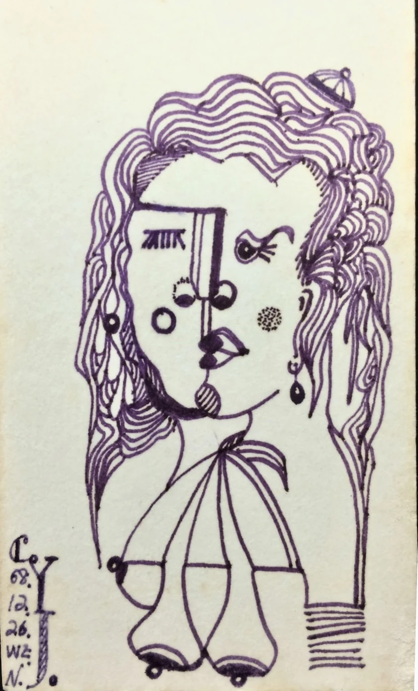
今夜應屬於粉紅色的 Tonight Belongs to Pink
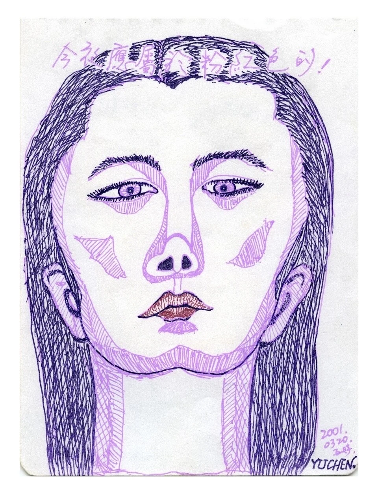
眼裡只有妳 Only You in My Eyes
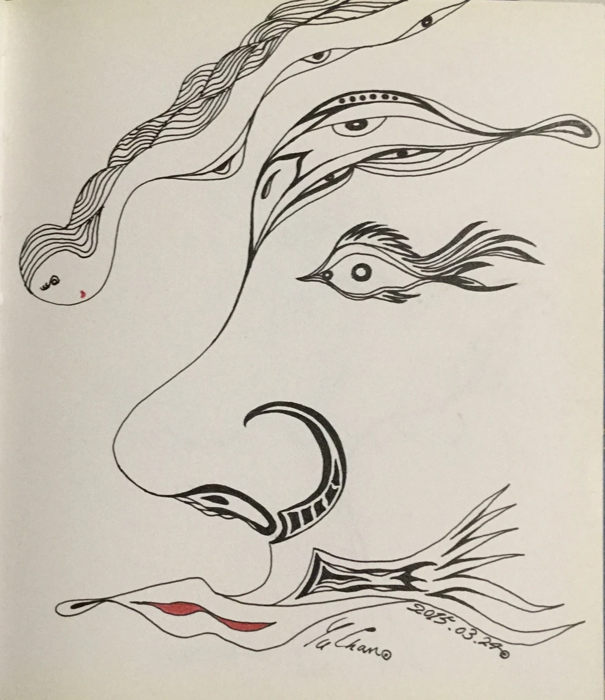
畫之始之二 Painting Origin II
樹精與生命線 Tree Spirits and Lines of Life
線條開始離開單純的臉，轉向植物性的身體與精靈般的生命，把紙面變成可以生長的地方。 Line begins to leave the simple face and turn toward plant-like bodies and spirit-like life, making paper a place where things can grow.
樹精之舞 Dance of the Tree Spirit
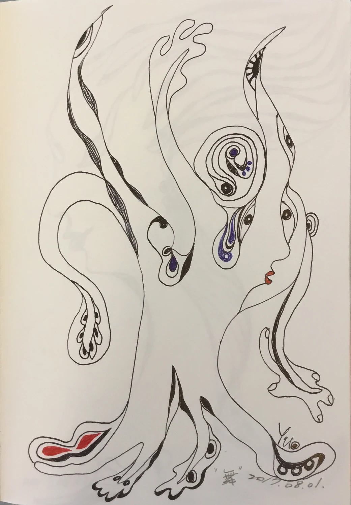
樹精之傲 Pride of the Tree Spirit

開心 Happiness
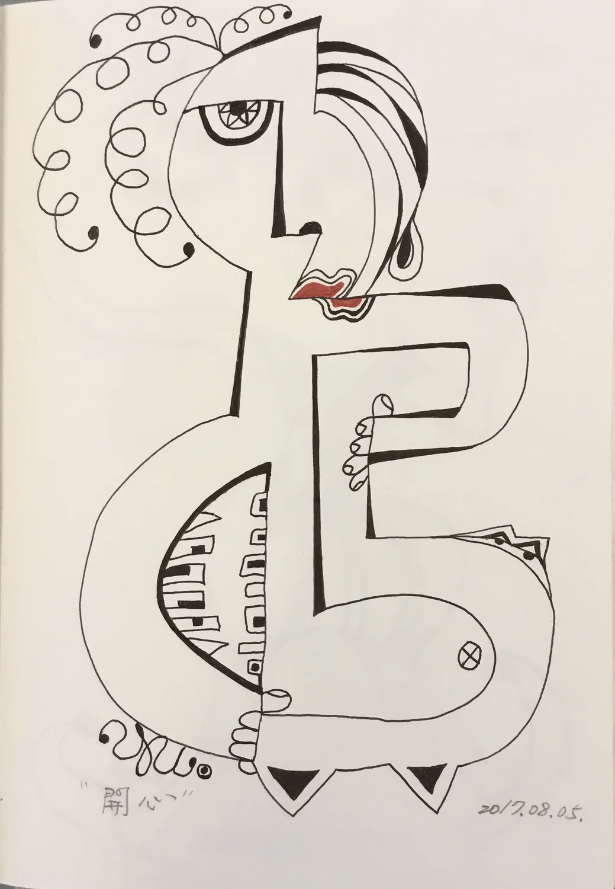
畫之始之三 Painting Origin III
角色與自我原型 Figures and Archetypes of Self
小丑、面具與自畫像把表演和真實放在同一張紙上，也讓後來「人格考古學」中的角色意識逐漸浮出。 Clown, mask, and self-portrait place performance and truth on the same sheet, allowing the later role-consciousness of Archaeology of Persona to surface.
小丑與面具 Clown and Mask
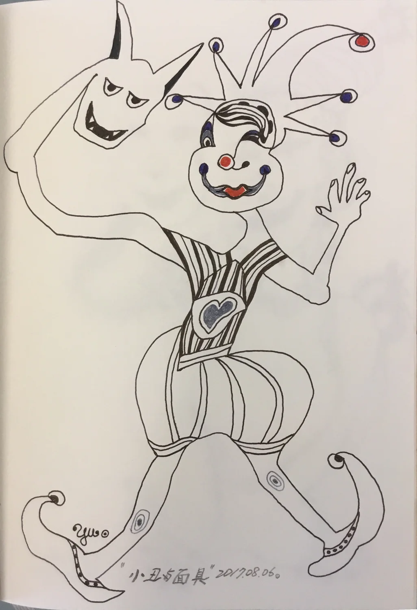
自畫像的起源 Origin of the Self-Portrait
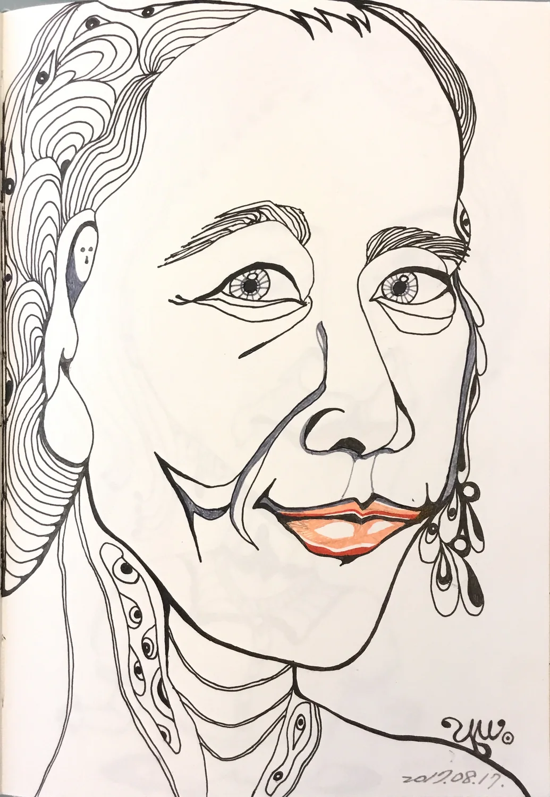
畫之始之四 Painting Origin IV
線條的飛行與關係 The Flight and Relations of Lines
絲帶、飛翔、祝福與晚年的臉彼此靠近，讓早期線條從自我延伸到關係，也慢慢長出更柔軟的敘事。 Ribbons, flight, blessing, and an elderly face draw close, allowing early line to extend from self into relation and grow a softer narrative.
絲帶的聯想 Ribbon Association
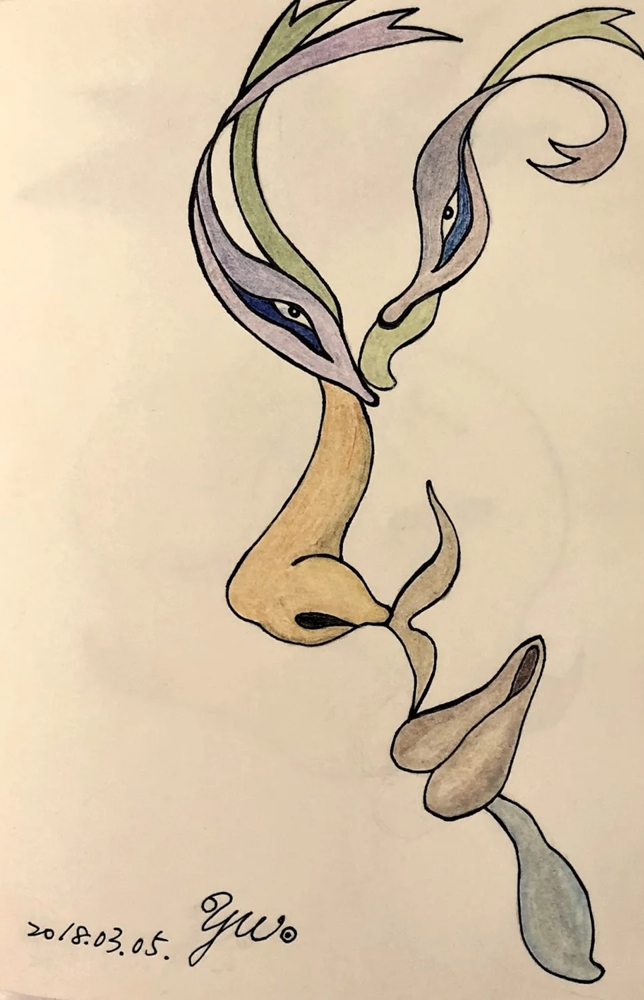
想飛的心 A Heart That Wants to Fly
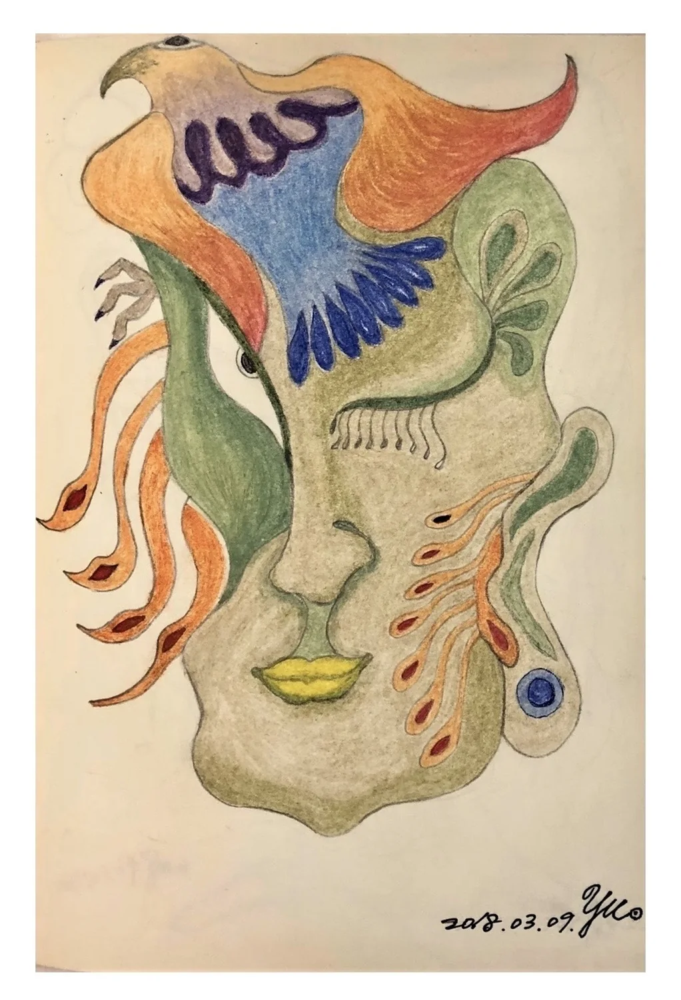
新郎與新娘 Bridegroom and Bride
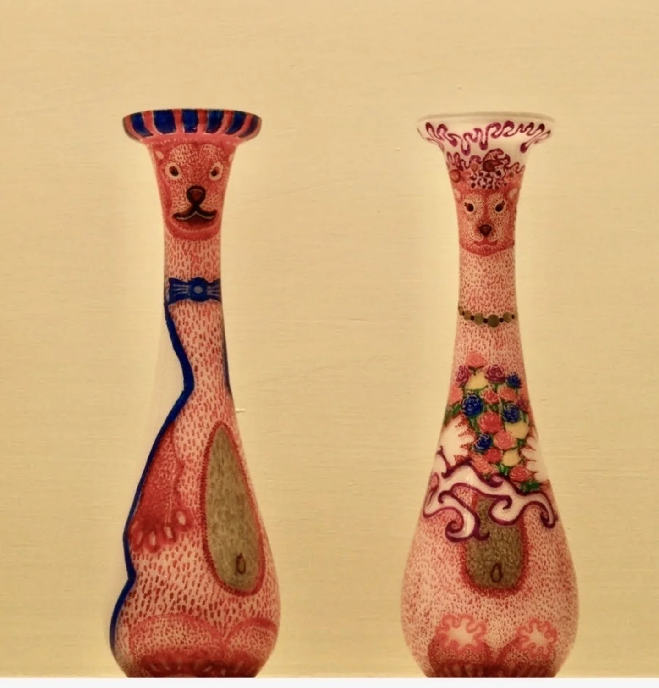
老頑童 The Playful Elder
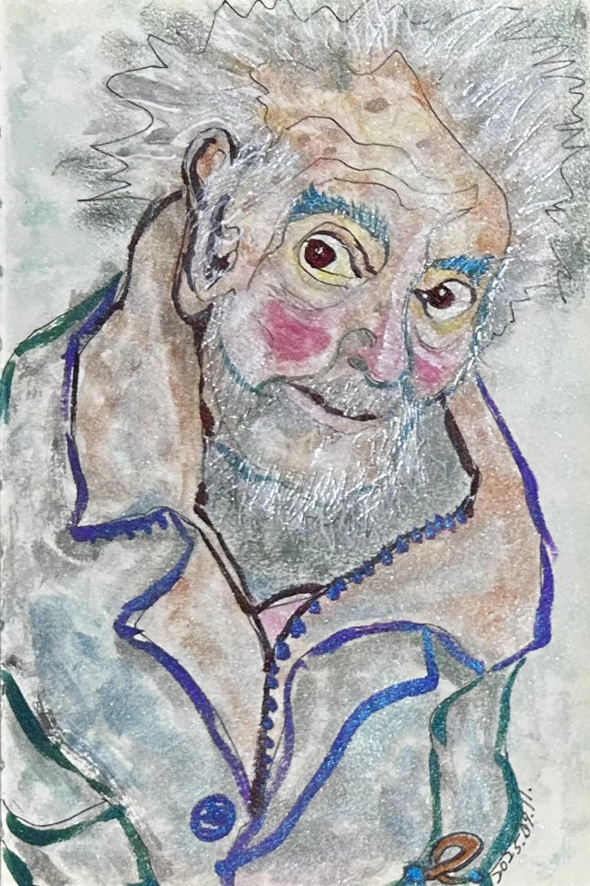
畫之始像一冊早期圖像日記，記錄線條如何從一張臉、一個眼神，慢慢走向角色、植物、關係與生命想像。 Painting Origin is like an early visual diary, recording how line moves from a face and a gaze toward figures, plants, relations, and life imagination.
它不是成熟系列的附錄，而是整個又禎宇宙最初開始觀看自己的地方。 It is not an appendix to the mature series, but the place where the Yuzen Universe first began to see itself.